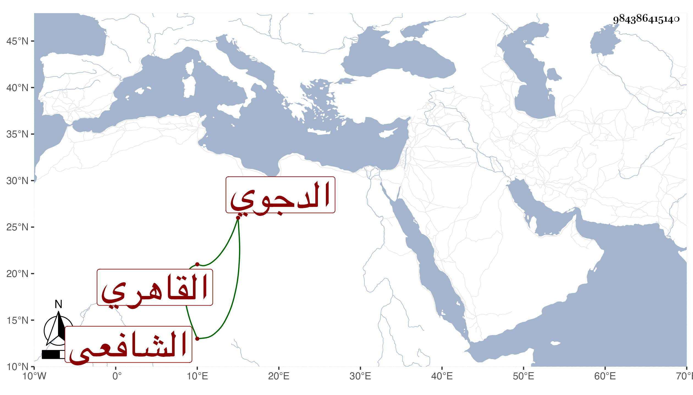

0902Sakhawi.DawLamic.ITO20230111-ara1.EIS1600.984386415140
Biography ID: 984386415140
956
علي بن محمد بن أحمد بن عبد الرحمن بن حيدرة بن عمر بن محمد بن موسى ابن عبد الجليل بن إبراهيم بن محمد نور الدين بن المحب بن العز الدجوي ثم القاهري الشافعي حفيد عم الحافظ التقي محمد بن محمد بن عبد الرحمن سمع عليه وعلى الصلاح الزفتاوي والتنوخي والحلاوي والسويداوي والأبناسي والغماري والزين المراغي وابن الشيخة والمطرز في آخرين واشتغل يسيرا وحدث سمع منه الفضلاء أجاز لي وكان ساكن الحركة مباشرا بالبيبرسية . مات في منتصف المحرم سنة إحدى وخمسين ودفن بتربتهم وهو قريب علي بن أحمد بن محمد بن أحمد بن حيدرة الماضي رحمهما الله .
